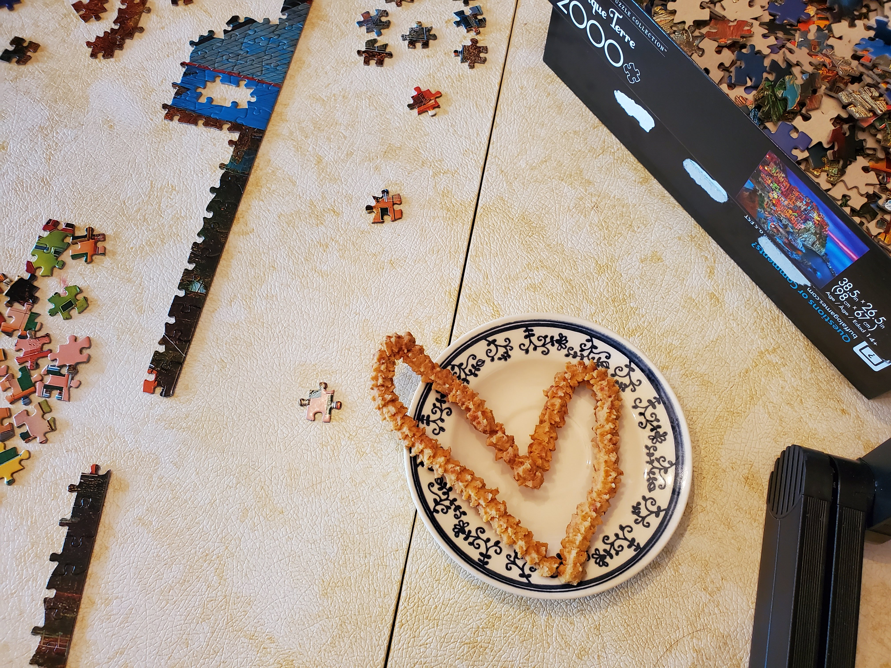

Road Trip Summer 2020
This summer, Hannah and I made the (potentially controversial) decision to go on a road trip to see my family in Mahomet, IL. With my Mom starting a new chemo treatment and a gracious remote posture from both of our work places, we decided the time was right to spend some time at home, pending negative COVID tests. We made the long drive starting Thursday, July 2 after work and made it to the middle of nowhere in Pennsylvania where we camped in a field. Check out HipCamp - it 's like Airbnb for camping! Great way to spend a night during COVID19.
We arrived safely in Illinois on the 3rd to be greeted by a sign that my parents made. Apparently, when Mom visited Dad's family for the first time (I believe when they were still dating?), his mom made a sign to greet her too!

Elizabeth and Orkun were planning to drive up to Illinois from their home in Atlanta on July 3rd as well, but their COVID tests took longer than expected to return and they didn't want to risk bringing any germs with them, so they joined us on the 5th of July after receiving miraculous negative results in the wee hours of the morning.
Illinois
Canasta
We did our best to acclimate Hannah on many of the Russell Family traditions. A tradition of particular import is the playing of Canasta. For Hannah's inaugural game, we played a seasoned partnership - Dad and Elizabeth. Usually, a Canasta beginner would stand no chance. But not only did we win (with Hannah boldly melding every time), but it was one of the shortest Canasta games in history - we cleaned up in a whopping 3 rounds. Here's a picture of the rookie with her triumphant scorecard. We have already been challenged by another veteran team, Bubba and Maia Russell - hoping we can face them soon!

Cheese Straws
Another deeply engrained tradition is Cheese Straws. For the unfamiliar reader, cheese straws are a cheesy, crispy snack that is more commonly consumed in the Southern U.S. It is a Russell family tradition to bring these addictive snacks to celebratory potlucks and the like. A post-Easter-Vigil reception feels lacking without a festive plate of cheese straws. I made a batch to share with family and a few church families that were deprived this Easter due to COVID.
An aside: I attempted to make a huge batch in the Highrock Church kitchen in Boston this past Christmas season to share with friends and coworkers, but had a tragic incident where my cookie press broke after piping about a foot of cheese straw!!! I ended up having to hand-roll cheese straws, which brought notable shame on the Russell family (as if moving to the North-East wasn't enough!). I am too afraid of shame-incursion to post a picture of the finished product, but here's a picture to show you the size of the batch. Note that this is no kitchen-aid, but an industrial stand mixer.

Dog walks
Our family loves going for walks, it's no secret. Mom is quite dedicated to the sport and whenever we come home it's always a joy to join her for any number of the 4-5+ walks she takes with the pooches on a given day. I always love hearing her talk about her work as an early childhood speech pathologist, her stories of finding what makes individual students tick, and how she often broke convention to find a way to communicate with them.
Every Saturday, Mom and Dad take the dogs out for an "outing" to a park, nature reserve, or trail that is outside the usual extent of their walks. On Saturdays, the muted sound of a bottle of sunscreen is enough to send the pups into a frenzy because they know that means it is outing time. During our visit, we got to go on 2 outings - one to explore a particularly patriotic neighborhood on the 4th, then we explored Meadowbrook park with its quirky statues and abundant wildflowers on the 11th. Here's a picture of the outing to Meadowbrook Park. I think my head is blocking a quirky statue.

Every time I go home, I am reminded of the rhythms and routines of home life in Illinois. I think there is something special to the faithfulness of sticking with these routines through sickness or health (I remember Mom was out walking by Friday following a Monday afternoon brain surgery), rain, snow, sun, or tempest (sometimes over the course of an afternoon in the midwest), sickness and health. It sometimes can feel monotonous or meaningless, but I have a strong suspicion that it is somehow in these rhythms that we are formed.
Motorcycle Rides
It's no secret that Orkun loves motorcycles. So it shouldn't come as a surprise that he and Elizabeth rolled up with a motorcycle strapped to the bed of their truck. I've had the pleasure to go for many a ride on the rear of Orkun's bike, but this was a first time experience for both Dad and Hannah. Orkun took Hannah out for her first ride one night after work. Afterwards, Hannah seemed pretty convinced that she would soon invest in a motorcycle. Elizabeth snuck Dad out too quickly for me to snag a pic, unfortunately. He enjoyed it nonetheless!

Grilling
For father's day, Mom, Elizabeth and I conspired to get Dad a new Weber gas grill. We enjoyed cooking out on the grill just about every other day. My apologies for the blurriness of the photo - I have a pretty poor phone camera and even poorer selfie-skills...


Compline
Compline is a liturgy at the end of the day, a beautiful and concise pattern of prayers and read scripture to worship Him, ask Him for forgiveness, thank Him, petition with Him, intercede to Him on behalf of others, and submit to Him to prepare for our vulnerable sleep. My dad has humbly prayed Compline every night that I can remember. Hannah and I had the pleasure of praying with him a few nights. One prayer that always sticks with me is this concise, all-encompassing prayer near the end of Compline. I always imagine that this prayer is pleading that God will wrap each and every human being in a huge hug, meeting them in whatever circumstance life may bring.
Keep watch, dear Lord, with those who work, or watch, or weep this night, and give your angels charge over those who sleep. Tend the sick, Lord Christ; give rest to the weary, bless the dying, soothe the suffering, pity the afflicted, shield the joyous; and all for your love's sake. Amen
Enroute between Illinois and North Carolina
Visiting Hannah's family in North Carolina was not in the original plans for this trip. We were only planning to be gone for 2 weeks. Halfway through our stay in Illinois, we decided to change our plans and visit North Carolina "on the way back". We are both so grateful for the ability to continue working remotely. So we set out on July 18th for Carey, NC.
We made a couple pit stops along the way. We first stopped in Indianapolis to see my dear college friends, Maddie and Ryan Evans. We hung out at a distance in their backyard and chatted over a cup of coffee. Always so refreshing to spend time with them. The way they love and serve one another is so evident from any length of interaction and it warms and inspires the heart just to spend an hour with them. Plus, we got to play with their animals:


North Carolina
We arrived a little late in North Carolina, around 10-11PM, and we were greeted with a sign as well! I'll confess that I was a little nervous about meeting Hannah's family, and was ready to pitch my tent in the backyard if necessary. I was touched that everyone waited up for us despite our I'm grateful that I didn't have to use my tent during the whole 2 week stay in North Carolina! I had the privilege of staying in Hannah's childhood bedroom. This is a personal favorite among the wall decor. Also, note the tasteful "plink" wall color:


Cooking with Grandma Chu
Hannah's grandmother, who I call Grandma Chu, has a sincere and beautiful heart for bringing her family together with food. If you are familiar with the enneagram, she is a textbook 2. I also love to show affection for people by cooking them good food, but I certainly had a lot to learn from Grandma Chu. I'm grateful that she was willing to take me on as an apprentice. She is a very good teacher with very high standards. One night I let it slip that my favorite food from my time in Singapore was cha siew bao (barbecue pork bun). I was hoping grandma Chu did not overhear this, as they are quite involved to make. This hope did not last long - Grandma Chu started the yeast dough that very night to prepare the next day. I was so touched that she was willing to go through the effort to prepare such a painstaking recipe and even teach me along the way!


It was quite special to hear Grandma Chu's stories - she has a lot of experience and has lived in a wide variety of places, from China to Colombia to Canada to North Carolina. But throughout it all, her earnest and sincere desire to support and love her family is so clearly evident.
Violin Lessons with Grace
Grace Chow is a multi-talented young lady, starting her senior year of High school. She has passions for neuroscience, personality types, boba tea, Animal Crossing, and Korean Dramas. And she is an excellent violinist! She was kind enough to give me a few lessons when I was there - a great teacher!

Celebrating Grandma Chu's Birthday
We were fortunate that the end of our trip was almost lined up with Grandma Chu's birthday! We decided we wanted to turn the tables and serve her! We prepared a green-themed meal (green being her favorite color), complete with pesto, brocoli, spinach quiche, salad, and matcha cookies (thank you Grace!). We were fortunate that both of her sons, Kam 1 and Kam 2, were available too! So we enjoyed a socially-distant birthday meal in the driveway! It was awesome to be a part of a somewhat spontaneous family reunion!


Concluding Thoughts
The COVID-19 pandemic has made me re-prioritize in a lot of ways. It think the biggest lesson is on the importance of people. I think I have the tendency to put a lot of value on my work, my output, my productivity. While it good to do good things, doing good things is secondary to love and people.
If I speak in the tongues of men and of angels, but have not love, I am a noisy gong or a clanging cymbal. And if I have prophetic powers and understand all mysteries and all knowledge, and if I have all faith, so as to remove mountains but have not love, I am nothing. If I give away all that I have, and if I deliver up my body to be burned, but I have not love, I gain nothing. 1 Corinthians 13: 1-3
We humans are made to be in relationships- with God, family, coworkers, neighbors. These relationships can get messy - people get sick, people hurt people, people grow cold and indifferent, people die, people sometimes talk too much, people lose their jobs, people make messes, people don't always clean their messes. But if our existence in all these relationships is not laced with love, or at least an earnest attempt at it, we gain nothing. COVID-19 has taught me to focus less on what I do, and more on how I can try to love, appreciate, and bring out the best in each of the people around me. Thanks for reading this long-winded post, hope you enjoyed it!!!